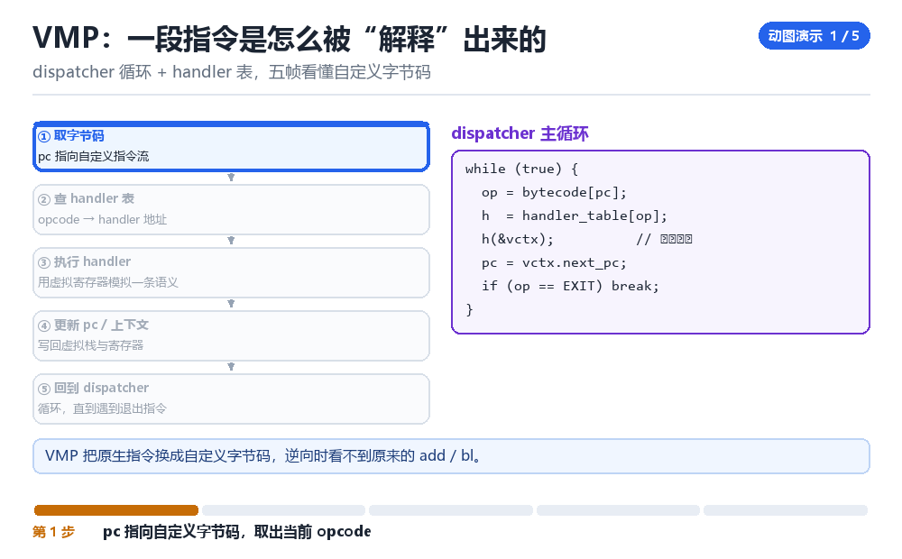

二期主线：从编译原理到 VMP
词法分析、CFG、IR 优化 → VMP 分析（转 IR）
想读懂 VMP，先得知道“正常编译器把代码变成了什么”。
1.1 四步路线
| 阶段 | 学什么 | 为什么 |
|---|---|---|
| 词法 / 语法 | token、AST | 看懂反编译输出的结构 |
| CFG | 基本块、支配树 | 识别混淆打散的控制流 |
| IR 与优化 | SSA、常量折叠、内联 | 理解“代码为什么变成这样” |
| VMP 分析 | handler 表、语义重建 | 把自定义字节码翻回 IR |
1.2 为什么先学编译原理
VMP 的本质是“自己实现一个虚拟机”。它的 handler 分派、栈机模型、寄存器分配，全都是编译器教科书的反面。你只有先知道“正常长什么样”，才能认出“哪里不正常”。
1.3 一条练习路线
- 用 Python 写一个玩具语言的 lexer + parser，输出 AST。
- 把 AST 转成三地址码（IR），画出 CFG。
- 实现两个优化：常量折叠、死代码消除。
- 读一个真实 VMP 样本的 dispatcher，试着还原 10 条指令的语义。
- 把还原结果写成 IR，再用自己的工具重新生成代码对比。
1.4 本章自测
- CFG 与基本块的关系是什么？
- SSA 形式解决了什么问题？
- VMP 与普通编译器的关系是什么？
- 为什么说“抽象能力不会过期”？
1.5 深入：为什么要从“玩具编译器”开始
因为编译器是“把人类意图翻译成机器指令”的完整流程。你自己写一遍，就会对“指令为什么长这样”有肌肉记忆——这正是读 VMP 时最需要的东西。
| 阶段 | 产出 | 对应能力 |
|---|---|---|
| lexer | token 流 | 看懂字节码 |
| parser | AST | 看懂结构 |
| IR | 三地址码 | 看懂数据流 |
| 优化 | 更简的 IR | 识破混淆 |
1.6 原理推演：为什么 VMP 的本质是“换了一套指令集”
因为 VMP 把原本的 ARM64 指令翻译成“自定义字节码”，再由一个解释器（dispatcher）执行。对分析者来说，这就相当于“遇到了一门没见过的手写汇编”——你必须先学会它的指令语义。
| 层次 | 正常 | VMP |
|---|---|---|
| 指令集 | ARM64 | 自定义字节码 |
| 执行方式 | CPU 直接执行 | dispatcher 解释 |
| 分析入口 | 反汇编即可 | 先逆 dispatcher |
所以“学编译原理”的价值就在这里：你已经知道“一个解释器大概长什么样”，于是能更快认出它的结构。
1.7 数据细节：一个 dispatcher 的典型结构
while (1) {
op = *pc++;
switch (op) {
case 0x01: /* add */ ...; break;
case 0x02: /* load */ ...; break;
...
}
}优化的 VMP 不会用 switch，而是用“handler 表 + 间接跳转”，甚至每个 handler 都做了变形。但结构本质不变：取指 → 译码 → 执行。
1.8 深入：CFG 为什么是分析的起点
因为“控制流图”把“代码”变成了“图”：节点是基本块，边是跳转。有了图，才能谈“支配关系”“循环结构”“可达性”——这些是所有后续分析的基础。
| 概念 | 含义 | 用途 |
|---|---|---|
| 基本块 | 顺序执行的一段 | 分析单元 |
| 支配树 | 谁能到达谁 | 识别循环 |
| 可达性 | 能不能走到 | 死代码消除 |
混淆（尤其是平坦化）的本质就是“破坏 CFG 的可读性”。所以反混淆的第一步永远是“把 CFG 重建出来”。
1.9 深入：IR 的三种常见形态
// 1. 三地址码
t1 = a + b; t2 = t1 * c;
// 2. SSA（每个变量只赋值一次）
t1_0 = a; t2_0 = t1_0 + b;
// 3. 字节码（栈机）
load a; load b; add; load c; mul;VMP 的字节码通常是第三种（栈机）。所以“转 IR”往往意味着“栈机 → 三地址码”的翻译。
1.10 实战：一个最小的栈机解释器
stack = []
for op in code:
if op == 'push': stack.append(next_arg())
elif op == 'add': b, a = stack.pop(), stack.pop(); stack.append(a+b)
elif op == 'mul': b, a = stack.pop(), stack.pop(); stack.append(a*b)
elif op == 'jmp': pc = next_arg()反编译窗口吐出三千行 switch
你打开一个被 VMP 保护过的函数，反编译器转了四十秒，吐出来一个三千行的 switch，里面几百个 case 全在给同一个变量赋值，然后再跳回循环开头。没有 add，没有 bl，没有任何一句像业务代码的句子。第一反应是「这没法读」——但换个角度想：这三千行其实是一台很小的计算机，它正在一丝不苟地执行别人写好的程序。你缺的不是耐心，是一套能把「机器在干什么」翻译回「人写了什么」的语言。那套语言就是编译原理。
把编辑器分成两半：左边放一句最普通不过的源码 a = b + 1;，右边放你从样本里抠出来的 dispatcher。二期这条主线要做的，就是让左边那句话一步一步变形，直到你能指着右边某个 case 说「这一支对应的是那个加号」。工具会过期，样本会换代，但这条变形链不会变。
dispatcher 循环 + handler 表，五帧看懂自定义字节码

一句源码走完正向编译链
- 词法分析器 → 对 字符流 `a = b + 1;` → 切成 token（
ID(a)ASSIGNID(b)PLUSNUM(1)SEMI）→ 结果是丢掉了空格和换行，只留下带类型的记号序列。 - 语法分析器 → 对 token 序列 → 按优先级把
b + 1先收成一个表达式节点，再挂到赋值节点下 → 结果是一棵 AST，树根是Assign，左子是a，右子是Add(b, 1)。 - IR 生成 → 对 AST → 后序遍历，给每个中间结果分配临时变量 → 结果是三地址码
t0 = b + 1和a = t0，控制流第一次变成线性的。 - SSA 改写 → 对 三地址码 → 给每次定义换一个新版本号（
b_1、t0_1、a_1）→ 结果是每个名字只被赋一次值，常量传播和死代码消除可以直接跑。 - 优化器 → 对 SSA → 若
b是编译期常量就折叠、若a之后没被用就整条删掉 → 结果是 IR 变短，但语义完全不变，这也解释了为什么反编译出来的代码常常「不像人写的」。 - 后端 → 对 IR → 做寄存器分配、选指令、排基本块 → 结果是几条 ARM64 指令，CFG 里的边变成
b.eq/b这样的跳转。
VMP 把这条链倒着放给你看
- 壳的打包器 → 对 原生指令 → 不走后端，而是按自己的 opcode 表把每条指令翻成自定义字节码 → 结果是你熟悉的
add在文件里彻底消失，只剩一串数字。 - dispatcher → 对 字节码流 → 用
pc取一个 opcode、查handler_table[op]→ 结果是把「该执行哪条语义」变成一次表查找，反编译器看到的就只剩那个巨大的switch。 - 某个 handler → 对 虚拟寄存器数组 → 模拟一条真实语义（加法、跳转、取字段）→ 结果是语义还在，只是藏在一个不起眼的小函数里，而且往往被拆成好几个片段。
- dispatcher 尾部 → 对 vctx → 写回
next_pc、虚拟栈和标志位再回到循环头 → 结果是控制流不再体现为 CFG 的边，而体现为状态变量的值，这也是平坦化看起来那么别扭的根源。 - 你 → 对 handler 表 → 逐条执行、记录虚拟寄存器变化、把每条 opcode 的语义写回 IR → 结果是自定义字节码被翻译回三地址码，前面那半边编辑器终于能对上了。
可复现实验：二十行写一个玩具 IR 生成器
import re
def to_ir(src):
# 只处理形如 a = b + 1; 的赋值，够用来对齐 dispatcher
m = re.match(r'\s*(\w+)\s*=\s*(\w+|\d+)\s*\+\s*(\w+|\d+)\s*;', src)
if not m: return []
dst, x, y = m.groups()
return ['t0 = ' + x + ' + ' + y, dst + ' = t0']
def fold(ir):
out = []
for ln in ir:
r, e = [s.strip() for s in ln.split('=')]
a, b = e.split('+')
out.append(r + ' = ' + str(int(a) + int(b)) if a.isdigit() and b.isdigit() else ln)
return out
print(to_ir('a = b + 1;'))
print(fold(to_ir('c = 2 + 3;')))看到什么算成功：第一行打印 ['t0 = b + 1', 'a = t0']，第二行打印 ['t0 = 5', 'c = t0']——前者是 IR 生成，后者是常量折叠，两个最基础的编译器动作你已经亲手跑通了。看到什么算失败：正则返回空列表，说明输入格式没对上（多了空格、少了分号、用了乘号），先把样本规整成这一句再跑；别急着扩展语法，这一步的目的是建立「源码 → 中间表示」的肌肉记忆，不是造一个完整编译器。
| 阶段 | 输入 | 产物 | 在 VMP 样本里对应什么 |
|---|---|---|---|
| 词法 / 语法 | 源码字符流 | AST | 你读不懂的字节码流之前的「原本意图」 |
| IR 生成 | AST | 三地址码 | handler 逐条还原后该写成的形式 |
| SSA / 优化 | 三地址码 | 化简后的 IR | 解释壳里那些冗余 case 为什么存在 |
| CFG / 支配 | IR | 基本块图 | 被状态变量打散、需要重建的控制流 |
| 后端 / VMP | IR | 机器码或字节码 | dispatcher 与 handler_table |
| 逆向主线 | handler 语义 | 重新生成的 IR | 你能指着 case 说出它对应哪个加号 |
把这句「它是一次编译」带到 P02：那边讲的控制流平坦化、不透明谓词、指令替换，本质上都是在这条变形链上人为加噪声。先知道正向长什么样，才知道哪些是噪声、哪些是语义。而 T02 里那套「不读代码、先抓输入输出」的做法，正是同一个抽象能力换到算法分析上的用法：都不靠硬啃，都靠先建模型。